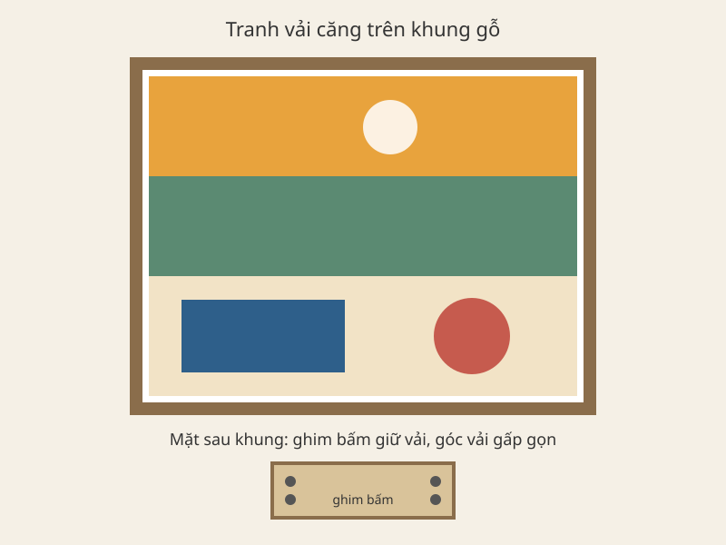

Tự làm tranh vải treo tường bằng vải canvas và sơn acrylic
Một mảng tường trống trong phòng nhỏ không nhất thiết phải lấp đầy bằng đồ mua sẵn. Một bức tranh vải tự vẽ, dù chỉ gồm vài mảng màu phẳng, cũng đủ làm mảng tường đó có điểm nhìn. Tranh vải hợp với nhà nhỏ vì nó nhẹ, không cần khung kính, và khi chuyển nhà bạn mang nguyên khung đi được.
Bài viết này hướng dẫn làm một bức tranh vải từ đầu: chọn vải và khung, căng vải lên khung, rồi vẽ mảng màu đơn giản bằng sơn acrylic. Bài này chỉ làm tranh bằng sơn và vải; cây cảnh và hoa tươi nằm ngoài phạm vi của bài. Bài cũng không dạy lại cách treo tường của Bài 4: phần treo tranh ở cuối bài chỉ nêu cách chọn chỗ đặt và cách kiểm tra tranh đã chắc chưa, còn cách treo an toàn cho tường nhà thuê thì bạn xem cách treo an toàn ở Bài 4. Tranh vải trong bài này khác tranh cắt giấy của Bài 1: tranh cắt giấy dán hình giấy lên nền cứng, còn tranh vải vẽ sơn trực tiếp lên mặt vải đã căng.
Chọn vải và khung
Việc đầu tiên không phải là cầm cọ, mà là quyết định bức tranh sẽ treo ở đâu và lớn cỡ nào. Bạn nên đo mảng tường trống trước, rồi chọn khổ tranh nhỏ hơn mảng tường đó khá nhiều, để xung quanh tranh còn khoảng tường trống. Bảng dưới đây là gợi ý chọn khổ theo chỗ đặt, không phải kích thước bắt buộc:
| Chỗ đặt | Khổ tranh gợi ý | Vì sao chọn khổ này |
|---|---|---|
| Tường phía trên bàn làm việc nhỏ | Khoảng 30 × 40 cm | Vừa tầm nhìn khi ngồi, không lấn sang chỗ để đồ trên bàn |
| Tường phía trên ghế ngồi | Khoảng 40 × 50 cm | Đủ làm điểm nhấn, vẫn chừa tường trống hai bên |
| Mảng tường trống trong phòng ngủ nhỏ | Khoảng 30 × 40 cm | Nhẹ, dễ tháo khi đổi phòng, không gây cảm giác nặng phía trên giường |
Người mới làm lần đầu nên mua vải canvas đã căng sẵn trên khung gỗ, vì loại này về là vẽ được ngay, không cần dụng cụ căng vải. Khi mua, bạn nên kiểm tra ba điểm: mặt vải phẳng, không có vết nhăn hay vết ố; vải căng đều, ấn nhẹ vào giữa thấy chắc tay chứ không chùng xuống; khung gỗ ở mặt sau thẳng, bốn góc vuông, không cong vênh.
Nếu bạn muốn khổ tranh mà cửa hàng không bán sẵn, bạn mới cần mua vải canvas cuộn và thanh khung gỗ rời, rồi tự căng theo hướng dẫn ở mục tiếp theo. Vải canvas cotton có độ hạt vừa phải là lựa chọn hợp với người mới, theo hướng dẫn của Mỹ Thuật Bụi. Bạn nên mua vải đã phủ lớp lót sẵn, hoặc mua thêm lọ gesso để tự quét lót. Gesso là hỗn hợp thạch cao và keo, khi quét lên vải và để khô sẽ tạo thành lớp nền hơi nhám, giúp màu acrylic bám tốt thay vì trượt hoặc thấm vào thớ vải. Theo cùng nguồn trên, nếu không có lớp lót này, màu dễ bong tróc theo thời gian.
Sơn acrylic hợp với người mới vì sơn khô nhanh, pha loãng và rửa cọ bằng nước, và sau khi khô có thể vẽ chồng lớp mới lên trên mà không làm xáo trộn lớp bên dưới. Hướng dẫn của Mỹ Thuật Bụi gợi ý người mới bắt đầu với 5 màu chính: trắng titanium, đen mars, đỏ, vàng và xanh dương. Từ 5 màu này có thể pha ra hầu hết dải màu cần dùng: đỏ với vàng ra cam, vàng với xanh dương ra xanh lá, đỏ với xanh dương ra tím, thêm trắng để có sắc nhạt hơn và thêm đen để có sắc tối hơn. Bạn nên lấy màu dẫn từ một món đồ đã có sẵn trong phòng — rèm, ga giường hay vỏ gối — rồi pha các mảng màu xoay quanh màu dẫn đó.
Ngoài vải, khung và sơn, bạn cần thêm: cọ dẹt lớn, cọ đầu bầu tròn cỡ vừa, cọ tròn nhỏ, bảng pha màu hoặc đĩa cũ không thấm nước, hai cốc nước, khăn giấy, băng dính giấy, bút chì mềm, thước, kéo và giấy báo cũ để lót sàn.
Căng vải lên khung
Mục này chỉ cần đọc khi bạn mua vải cuộn và khung gỗ rời; nếu bạn đã mua vải căng sẵn, bạn bỏ qua mục này. Căng vải là việc cần làm chậm và đều tay, vì căng lệch một bên sẽ làm bức tranh méo khi treo lên tường. Hướng dẫn căng vải dưới đây dựa trên bài hướng dẫn của Canvas Base, vốn viết cho việc căng tranh in sẵn lên khung gỗ; các thao tác — đo chéo khung, chừa vải thừa, bấm ghim từ giữa ra ngoài — áp dụng được như nhau cho vải canvas trắng chưa vẽ.
Trước hết, bạn lắp khung gỗ. Các thanh khung thường ghép với nhau ở bốn góc bằng khớp mộng. Bạn ghép hai góc trước, rồi ghép hai góc còn lại, gõ nhẹ bằng búa cao su cho khớp khít. Trước khi đặt vải lên, bạn nên kiểm tra khung có vuông hay không: đo hai đường chéo của khung, hai số đo phải gần bằng nhau. Hướng dẫn của Canvas Base nêu rõ: hai đường chéo nên chênh nhau trong khoảng một milimét, vì khung lệch dù chỉ vài milimét cũng làm tranh trông xiêu vẹo khi treo.
Tiếp theo, bạn trải vải úp mặt xuống một mặt bàn phẳng và sạch, rồi đặt khung úp mặt xuống giữa tấm vải, sao cho phần vải thừa ở bốn cạnh đều nhau. Với thanh khung dày khoảng 20 mm, hướng dẫn của Canvas Base gợi ý chừa khoảng 50 mm vải thừa mỗi bên; với thanh khung dày hơn, khoảng 38 mm, thì chừa khoảng 65–70 mm mỗi bên.
Khi bấm ghim, thứ tự quan trọng hơn lực kéo. Bạn bấm một ghim ở giữa cạnh trên, rồi một ghim ở giữa cạnh dưới, rồi một ghim ở giữa cạnh trái và một ghim ở giữa cạnh phải, để vải được giữ thành hình chữ thập trước. Sau đó, bạn làm việc từ giữa ra hai đầu của từng cạnh, mỗi lần bấm xong một bên thì chuyển sang bấm bên đối diện, và cứ luân phiên như vậy. Hướng dẫn của Canvas Base mô tả cách này là làm từng bước nhỏ khoảng 50 mm, luôn đổi bên, ghim cách mép vải đã cắt khoảng 10 mm và cách nhau khoảng 40–50 mm. Bạn kéo vải vừa hết phần chùng, không kéo quá mạnh.
Bạn để bốn góc chưa bấm ghim cho tới cuối. Khi bốn cạnh đã xong, bạn gấp góc vải giống như gấp góc gói quà: kéo phần vải thừa ở góc chéo qua góc khung, ép phẳng xuống mặt sau của một cạnh, gấp phần thừa còn lại thành một nếp gọn, rồi bấm hai hoặc ba ghim sát nhau để giữ nếp gấp. Bạn làm bốn góc giống nhau, cùng một hướng gấp, để mặt sau trông gọn gàng. Sau khi gấp góc xong, bạn cắt bớt vải thừa ở góc, chừa lại khoảng 20 mm, rồi ép nếp gấp cho phẳng. Cuối cùng, bạn kiểm tra lại toàn bộ mặt vải: không còn nếp nhăn, đường dệt thẳng, bốn góc phẳng. Nếu vải chưa phủ lớp lót, bạn quét một hoặc hai lớp gesso mỏng lên mặt vải, để khô hẳn rồi mới vẽ.
Vẽ mảng màu đơn giản bằng sơn acrylic
Tranh mảng màu hợp nhất với người mới, vì nó không đòi hỏi bạn vẽ giống hình thật. Bạn chỉ cần chia mặt vải thành vài mảng lớn, tô mỗi mảng một màu, rồi thêm một hoặc hai chi tiết nhỏ để bức tranh có điểm nhìn. Bạn nên chọn một mẫu cho bức tranh đầu tiên, làm xong rồi mới thử mẫu khác ở bức sau.
| Mẫu | Cách chia mảng | Hợp với phòng nào |
|---|---|---|
| Dải ngang | Chia mặt vải thành ba dải ngang: trên, giữa, dưới | Phòng ngủ nhỏ, vì dải ngang làm tường trông rộng hơn |
| Khối hình học | Chia mặt vải thành vài hình chữ nhật và hình tròn lớn, xếp lệch nhau | Góc làm việc, vì hình khối rõ ràng, gọn gàng |
| Chấm và đường | Nền một màu nhạt, thêm vài chấm tròn lớn và một đường cong | Phòng có nhiều đồ nhỏ, vì mẫu này ít màu, không làm phòng rối |
Bạn nên phác bố cục bằng bút chì mềm trước khi tô màu. Bạn vẽ nhẹ các đường chia mảng, ghi chú màu định tô vào từng mảng, rồi lùi lại nhìn xem các mảng có cân đối hay không. Nếu bạn muốn mép giữa hai mảng thật thẳng, bạn dán băng dính giấy dọc theo đường chia, tô màu xong đợi khô rồi mới bóc băng ra. Cách chia mảng bằng băng dính giấy để tạo mép thẳng cũng được nêu trong hướng dẫn làm tranh vải của Rubenstein.
Khi tô màu, bạn nên bắt đầu từ mảng lớn nhất và màu nhạt nhất, rồi mới tô tới mảng nhỏ và màu đậm hơn. Bạn tô từng mảng một, để lớp màu khô rồi mới tô mảng kề bên, vì sơn acrylic khô nhanh nên hai mảng ướt chạm nhau rất dễ lem vào nhau. Theo hướng dẫn của Mỹ Thuật Bụi, mỗi lớp sơn acrylic thường khô trong khoảng 15–30 phút; khi chồng lớp mới, bạn nên đợi lớp dưới khô hẳn rồi mới tô lớp trên. Bạn nên pha màu thử ra góc bảng pha trước khi đưa lên tranh, và pha dư ra một chút, vì pha lại đúng màu cũ rất khó. Cùng nguồn trên lưu ý không pha quá 30% nước, vì pha quá nhiều nước sẽ làm hỏng cấu trúc màng sơn.
Bạn nên vẽ từ mảng lớn tới chi tiết nhỏ, và từ vùng tối tới vùng sáng. Bạn tô xong các mảng nền, để khô, rồi mới thêm một hoặc hai điểm nhấn: một đường viền mỏng, vài chấm tròn, hoặc một mảng nhỏ màu sáng đặt lệch về một phía.
Một ưu điểm của sơn acrylic là bạn sửa lỗi được bằng cách vẽ chồng lên. Nếu một mảng bị lem, bạn đợi lớp đó khô hẳn rồi tô đè lớp màu mới lên trên. Hướng dẫn của Rubenstein cũng nêu cách sửa này: lỗi có thể vẽ đè lên khi lớp sơn đã khô. Bạn không nên cố sửa khi màu còn ướt, vì càng quệt càng lem. Bạn nên rửa cọ ngay sau khi đổi màu, vì sơn acrylic khô trên cọ rất khó rửa.
Thời gian làm một bức tranh khổ 30 × 40 cm chỉ là ước chừng của người viết cho người mới làm lần đầu, không phải thời gian cố định: căng vải khoảng một buổi chiều nếu tự căng, vẽ mảng màu khoảng một đến hai buổi tối, gồm cả thời gian chờ lớp sơn khô.
Cách treo an toàn
Tranh vải căng khung xong thì bạn mới nghĩ tới chuyện treo. Bạn nên chọn mảng tường đã đo từ đầu, lau sạch bụi ở vị trí định treo, và ướm thử bức tranh lên tường trước khi gắn móc. Bạn nên nhờ một người khác giữ tranh trong khi bạn lùi lại nhìn: tranh có thẳng không, tranh có vừa với mảng tường không, tranh có che mất công tắc hay ổ điện không. Bạn nên tránh treo tranh ngay phía trên đầu giường hay phía trên bàn làm việc.
Về cách treo, bài này không viết lại quy tắc tải trọng và cách chọn móc dán của Bài 4. Bạn nên xem cách treo an toàn ở Bài 4 trước khi treo tranh. Điều bài này nhắc thêm chỉ là hai việc riêng của tranh vải: bạn nên cân thử bức tranh sau khi làm xong để biết tranh nặng bao nhiêu, rồi mới chọn cách treo hợp với cân nặng đó; và bạn nên kiểm tra mặt sau của khung trước khi treo, xem ghim bấm có chắc không, góc vải có bị bung không, và khung có bị cong không.
Bạn không nên treo tranh vải ở nơi ẩm ướt hay nơi nắng gắt chiếu trực tiếp cả ngày, bạn cũng không nên treo tranh vải ở nơi người đi lại hay va vào, như ngay cạnh cửa ra vào hay lối đi hẹp. Nếu bạn ở nhà thuê, bạn nên hỏi chủ nhà trước khi gắn bất cứ thứ gì lên tường, kể cả móc dán, vì hợp đồng thuê của bạn mới là thứ quyết định bạn được làm gì với tường.
Bảo quản tranh vải
Tranh vải tự vẽ không cần chăm sóc cầu kỳ, nhưng cần tránh ba thứ: ẩm, nắng gắt và va đập. Bạn nên chọn chỗ treo thoáng, tường không bị thấm nước và không bị mưa hắt vào qua cửa sổ. Vải canvas hút ẩm, nên tranh treo ở tường ẩm lâu ngày có thể bị mốc ở mặt sau hoặc làm màu bị ố. Bạn nên kiểm tra mặt sau của tranh vài tháng một lần, nhất là vào mùa ẩm.
Nắng gắt chiếu trực tiếp cũng làm màu acrylic phai dần theo thời gian. Bạn không nên lau tranh bằng khăn ướt, vì nước làm vải mềm ra và có thể làm màu bị lem. Bạn nên lau bụi bằng khăn khô mềm hoặc chổi lông mềm, lau nhẹ theo một chiều, không chà mạnh.
Khi tranh đã khô hoàn toàn, bạn có thể phủ một lớp sơn bóng bảo vệ để màu bền hơn và dễ lau bụi hơn. Hướng dẫn của Rubenstein gợi ý chờ tranh khô ít nhất 24–48 giờ rồi mới phủ lớp sơn bóng bảo vệ, còn hướng dẫn của Mỹ Thuật Bụi lưu ý với tranh mỏng nên đợi tối thiểu 48 giờ, và với tranh có lớp sơn dày thì đợi 3–6 ngày.
Khi chuyển nhà, bạn nên bọc tranh bằng vải mềm hoặc giấy báo, đặt tranh đứng thẳng, không đặt đồ nặng lên mặt tranh.
Kết luận
Một bức tranh vải đầu tay không cần cầu kỳ: đo tường và chọn khổ tranh trước, căng vải đều tay từ giữa ra ngoài, vẽ mảng màu lớn trước rồi mới thêm điểm nhấn, và treo tranh sau khi đã kiểm tra khung và xem cách treo an toàn ở Bài 4. Bạn chỉ cần một bức tranh đầu tiên, khổ nhỏ, vài mảng màu, để thử xem màu sắc đó có hợp với phòng của bạn hay không.
Nguồn tham khảo
- Mỹ Thuật Bụi, "Hướng dẫn cách vẽ tranh Acrylic cho người mới bắt đầu" — dùng cho các khẳng định: sơn acrylic khô nhanh, bám tốt trên nhiều bề mặt và dễ sửa lỗi bằng cách chồng lớp; vải canvas cotton độ hạt vừa phải hợp với người mới; gesso tạo lớp nền hơi nhám giúp màu bám tốt, không có gesso màu dễ bong tróc; bảng 5 màu chính cho người mới và quy tắc pha màu đỏ + vàng = cam, vàng + xanh dương = xanh lá, đỏ + xanh dương = tím; mỗi lớp sơn thường khô bề mặt trong khoảng 15–30 phút; pha loãng bằng nước tối đa 30%; vẽ từ mảng lớn đến chi tiết nhỏ, từ vùng tối đến vùng sáng; chờ tranh mỏng tối thiểu 48 giờ và tranh lớp dày 3–6 ngày trước khi phủ sơn bóng bảo vệ (truy cập 23/11/2026): https://mythuatbui.edu.vn/cach-ve-tranh-acrylic-cho-nguoi-moi-bat-dau
- Canvas Base, "How to Stretch a Canvas Print onto a Wooden Frame" — dùng cho các khẳng định: căng vải phải đều tay, làm từ giữa ra ngoài, từng bước nhỏ; kiểm tra khung vuông bằng cách đo hai đường chéo, hai số đo nên chênh nhau trong khoảng một milimét; chừa khoảng 50 mm vải thừa mỗi bên với thanh khung dày 20 mm và khoảng 65–70 mm với thanh khung dày 38 mm; bấm ghim giữa cạnh trên rồi cạnh dưới, rồi hai cạnh bên, sau đó làm ra hai đầu từng bước khoảng 50 mm, ghim cách mép vải khoảng 10 mm và cách nhau khoảng 40–50 mm; gấp góc vải như gấp góc gói quà, cắt bớt vải thừa ở góc chừa khoảng 20 mm. Lưu ý: bài hướng dẫn này viết cho việc căng tranh in sẵn lên khung gỗ; bài viết này áp dụng cùng kỹ thuật căng cho vải canvas trắng chưa vẽ (truy cập 23/11/2026): https://www.canvasbase.co.uk/how-to-stretch-a-canvas-print-onto-a-wooden-frame/
- Rubenstein Photography, "Create Stunning DIY Canvas Wall Art for Your Home" — dùng cho các khẳng định: người mới nên bắt đầu với vải canvas đã căng sẵn khổ vừa, vì loại này dùng được ngay và không cần khung thêm; sơn acrylic khô nhanh, gốc nước nên dễ vệ sinh; chia mảng màu bằng băng dính giấy để tạo mép thẳng; lỗi có thể vẽ đè lên khi lớp sơn đã khô; chờ tranh khô ít nhất 24–48 giờ rồi mới phủ lớp sơn bóng bảo vệ; trải giấy báo hoặc vải bạt lót sàn trước khi vẽ (truy cập 23/11/2026): https://rubensteinphotography.com/wall-art/12816/diy-canvas-wall-art/
Phương án ảnh

Đây là sơ đồ minh họa, không phải ảnh chụp thực hành